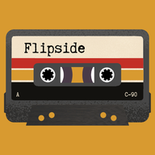
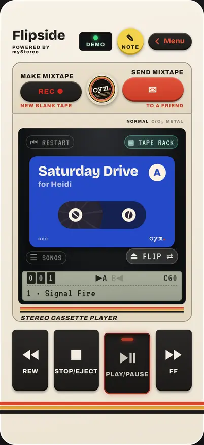

You’re one of the first people making mixtapes on Flipside. Ten minutes gets you from nothing to a tape in a friend’s hands. Then tell BC what happened.
Quick Start · Flipside 1.9

Liner notes. On the Label tab, a few lines about the whole tape. They travel with it.
Why it’s here. In the deck’s SONGS list, tap a song and write why it’s on the tape. While it plays, ✎ NOTE shows on the readout.
Fill. A side with a minute or more left shows a Fill button with songs that fit.
Drawers. Lift a tape in the rack and press ASSIGN to put it in Morning, Road Trip or one of your own.
Real Tape. Got a tape deck with a line in? Lift a tape and press TAPE OUT to record it.
Plan one. From your second tape on, the bench adds the Crate, the Coach and songs you don’t own yet.
Press ✎ NOTE on the deck whenever something breaks, gives you an idea or makes you smile. SEND NOW sends it straight to BC. Menu › Alpha › What to Test lists what he most wants to hear about.
No mail app? bc@runawayanchor.com
It’s an alpha. Things will break.
Phones only start sound after a tap. If the first PLAY is silent, press it again.
Use the Home Screen app, not a private Safari tab. Private tabs forget everything when you close them.
Save a backup now and then: Settings › Your Music › Back Up My Tapes. Always do it before removing Flipside from your Home Screen.
A song won’t add? If it’s in iCloud Drive, open it once in Files so it downloads, then try again.
The full User’s Guide is in Settings › Help & About.
Who are you making a tape for?
Flipside · powered by myStereo · an Own Your Media Club project · flipside.ownyourmedia.club